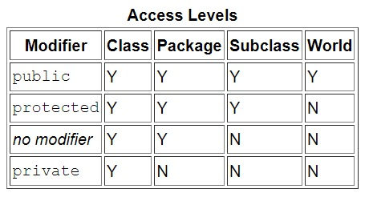

🌎 Clases en Java
🧭 Índice rápido
- 🧠 Objetos y clases
- 🧩 Sintaxis correcta de una clase
- 🔐 Modificadores de acceso (clases vs. miembros)
- 🧾 Miembros de una clase
- 🛠️ ¿Qué es un constructor?
- 🔐 ¿Qué son las invariantes?
- 🔁 Getters y setters: cuándo usarlos (y cuándo no)
- ✅ Inmutabilidad práctica
- 🧭 Palabra reservada
this - 👉 Ejemplo básico bien formado
- 🚗 Creación de una instancia de la clase
- 🌌 Clase
Objecten Java — “la clase cósmica” - 🗣️ Método
toString()
🧠 Objetos y clases
Una clase es una plantilla, es el componente fundamental en la POO. Para entender el concepto de clase, primero necesitamos entender que son los objetos ya que son la clave en la tecnología orientada a objetos. un objeto es una instancia creada a partir de esa plantilla. Los objetos combinan estado (campos) y comportamiento (métodos).
Los objetos son muy similares a los objetos que representan cosas del mundo real. Como puede ser un micrófono, altavoz, ordenador, etc.
❇️ Identidad
La identidad de un objeto normalmente se implementa a través de un ID único. El valor del ID no es visible para el usuario externo. Sin embargo, la JVM lo utiliza internamente para identificar cada objeto de forma única.
❇️ Estado - Campos
Representa el valor de los datos. Por ejemplo, para un ordenador, el estado podría ser la cantidad de memoria RAM que tiene, el sistema operativo que incluye, tamaño del disco duro, etc. En el caso de una persona, el estado puede ser la edad, el nombre, si está casada, etc.
❇️ Comportamiento - Métodos
Atendiendo al comportamiento de un ordenador podría ser arrancando, apagándose, reiniciando, escribir en la pantalla, etc. Para una persona será comer, beber, dormir, etc.
🧩 Sintaxis correcta de una clase
Una clase de nivel superior (top‑level) solo puede ser public o de paquete (sin modificador).
No existen private ni protected para clases top‑level (sí para clases anidadas).
- class: identificador de clase.
// En el fichero src/main/java/com/acme/model/Coche.java
package com.acme.model;
public class Coche { // pública → accesible desde cualquier paquete
// miembros…
}
// Alternativa de paquete (package‑private): accesible solo en el paquete com.acme.model
class CocheInterno {
}
🚫 No puedes hacer esto:
private class Coche { } // ❌ error de compilación
protected class Coche { } // ❌ error de compilación
Reglas de nombre: UpperCamelCase para clases e interfaces. Un fichero puede contener una clase public cuyo nombre debe coincidir con el del fichero.
🔐 Modificadores de acceso (clases vs. miembros)
Clases top‑level: public o (de paquete).
Miembros (campos, métodos, constructores, clases anidadas):
- public → libre acceso desde cualquier lugar.
- protected → son accesibles dentro del mismo paquete y subclases (clases heredadas).
- (sin modificador) → solo clases dentro del mismo paquete.
- private → solo son accesibles desde dentro de la misma clase.
Consejo: empieza por lo más restrictivo (
private) y abre solo si es necesario. Evita campospublicsalvo constantes (public static final).

🧾 Miembros de una clase
Una clase es una plantilla que agrupa miembros, es decir, los elementos que definen su estructura (datos) y su comportamiento (acciones).
En Java, los miembros principales de una clase son:
- Campos (estado) — preferiblemente private y, si es posible, final.
- Métodos (comportamiento).
- Bloques de inicialización.
- Constructores.
🧩 1. Campos o atributos o variables de instancia
Los campos (también llamados atributos o variables de instancia) son las variables que almacenan el estado de un objeto.
Cada objeto tiene su propia copia de estos campos (salvo que sean static).
Las variables o campos que creamos en la clase que pueden ser accesibles desde cualquier lugar dentro de la clase que estamos creando.
public class Coche {
// Campos: describen las características del objeto
private String modelo;
private String color;
private int puertas;
}
🟢 Consejos:
- Decláralos preferiblemente como private para protegerlos del acceso externo.
- Usa final si no cambiarán tras el constructor (inmutabilidad).
- Los nombres de campos se escriben en minúsculaCamelCase.
🧰 2. Métodos
Los métodos representan el comportamiento de la clase: lo que el objeto puede hacer.
Cada método puede acceder a los campos de la clase y modificarlos si es necesario.
public class Coche {
private String modelo;
private int velocidad;
// Método que define una acción
public void acelerar(int kmh) {
velocidad += kmh;
System.out.println("El coche acelera a " + velocidad + " km/h");
}
}
🟢 Consejos:
- Empieza los nombres con verbos (acelerar, frenar, calcularTotal…).
- Usa public solo si necesitas que sea accesible desde fuera.
- Devuelve valores con return si el método calcula algo.
⚙️ 3. Bloques de inicialización de instancia (poco usados)
Los bloques de inicialización ejecutan código automáticamente antes del constructor.
Son poco usados, pero sirven para inicializar estructuras complejas o contadores.
public class Ejemplo {
private int id;
// Bloque de instancia → se ejecuta cada vez que se crea un objeto
{
System.out.println("Nuevo objeto con id " + id);
}
}
🟢 Consejos:
- Prefiere inicializar directamente en el campo o dentro del constructor.
- Usa los bloques solo si realmente lo necesitas.
🛠️ ¿Qué es un constructor?
Un constructor es un método especial que se ejecuta automáticamente cuando se crea un objeto con new. Su función es inicializar los atributos del objeto, garantizando que empiece su vida en un estado válido.
public class Persona {
private String nombre;
private int edad;
// Constructor: inicializa los atributos
public Persona(String nombre, int edad) {
this.nombre = nombre;
this.edad = edad;
}
}
🟢 Características:
- Tiene el mismo nombre que la clase.
- No tiene tipo de retorno (ni siquiera void).
- Se llama con new Persona("Ana", 25);.
🧱 Tipos de constructores en Java
-
Constructor por defecto (implícito):
-
Si no escribes ninguno, Java crea automáticamente un constructor vacío.
public class Coche {
// Java crea esto automáticamente:
public Coche() {
}
}
-
Constructor explícito vacío:
-
Tú mismo lo defines, aunque no haga nada.
- Suele usarse cuando necesitas personalizarlo o mantener compatibilidad.
public Coche() {
System.out.println("Coche creado");
}
-
Constructor con parámetros:
-
Permite inicializar los atributos con valores específicos.
public Coche(String modelo, String color) {
this.modelo = modelo;
this.color = color;
}
-
Constructor copia:
-
Crea un nuevo objeto copiando los valores de otro.
public Coche(Coche otro) {
this.modelo = otro.modelo;
this.color = otro.color;
}
-
Constructor privado:
-
Se usa para restringir la creación directa de objetos.
- Suele combinarse con un método fábrica o el patrón Singleton.
public class Conexion {
private Conexion() {} // No se puede instanciar directamente
public static Conexion crear() { return new Conexion(); }
}
- En Java no hay destructores; la memoria la gestiona el GC (garbage collector).
🔄 Llamar a otro constructor con this()
En Java, una clase puede tener varios constructores (por ejemplo, con distintos parámetros). A veces queremos reutilizar código entre ellos para no repetir la misma inicialización.
Para eso existe la llamada especial this(), que invoca otro constructor de la misma clase.
Ejemplo:
public class Coche {
private String modelo;
private String color;
// Constructor 1
public Coche(String modelo, String color) {
this.modelo = modelo;
this.color = color;
}
// Constructor 2: usa el anterior con un valor por defecto
public Coche(String modelo) {
//primera línea tiene que ser this
this(modelo, "blanco"); // 👈 Llama al constructor de arriba
}
public Coche(String modelo) {
System.out.println("Creando coche..."); // ❌ Error: no puede ir antes
this(modelo, "blanco");
}
}
📘 Reglas importantes
- 🔹 La llamada a otro constructor con this(...) debe ser la primera instrucción dentro del constructor.
- ❌ No puedes escribir nada antes de ella.
- 🔹 Puedes encadenar varias llamadas entre constructores (uno llama a otro, y así sucesivamente). Pero evita bucles (no puede haber un this() que indirectamente se llame a sí mismo).
- 🔹 No se puede usar this() para llamar a un constructor de otra clase.
public class Persona {
private String nombre;
private int edad;
private String ciudad;
// Constructor principal (todos los parámetros)
public Persona(String nombre, int edad, String ciudad) {
this.nombre = nombre;
this.edad = edad;
this.ciudad = ciudad;
}
// Constructor intermedio
public Persona(String nombre, int edad) {
this(nombre, edad, "Desconocida"); // llama al principal
}
// Constructor mínimo
public Persona(String nombre) {
this(nombre, 0); // llama al intermedio
}
@Override
public String toString() {
return nombre + " (" + edad + " años) de " + ciudad;
}
}
🔐 ¿Qué son las invariantes?
Las invariantes son condiciones que siempre deben cumplirse en los objetos de una clase. Se establecen normalmente en el constructor o en los setters para evitar estados incorrectos.
Ejemplo:
public class Coche {
private final int puertas;
private String modelo;
public Coche(int puertas, int ruedas, String modelo, String color) {
if (puertas < 1) throw new IllegalArgumentException("puertas < 1");
this.puertas = puertas;
this.modelo = Objects.requireNonNull(modelo, "El modelo no puede ser nulo");//si es null lanza NPE con ese mensaje
this.modelo = Objects.requireNonNullElse(modelo, "Desconocido");//si es null, devuelve como modelo "Desconocido", pero NO lanza NPE
}
}
🟢 Así te aseguras de que ningún coche se cree con un número de puertas erróneo. Ni con un modelo nulo. Es una práctica de programación defensiva.
🔁 Getters y setters: cuándo usarlos (y cuándo no)
Los getters y setters son métodos para leer y modificar el estado interno de un objeto de forma controlada. Su objetivo es encapsular los campos (normalmente private) y mantener las invariantes de la clase.
📌 Convenciones de nombre
- Getter estándar: getCampo() → devuelve el valor.
- Getter booleano: isActivo() o getActivo() (preferible is...).
- Setter: setCampo(T nuevoValor) → siempre incluye parámetro.
✅ Buenas prácticas esenciales
- Valida en setters (y constructores) para mantener invariantes (requireNonNull, rangos, formatos).
- No generes automáticamente getters y setters para todo. Si cada atributo tiene un get y un set, estás permitiendo que cualquier otra clase cambie los datos libremente, sin ningún control.
- Evita setters para todo; prefiere métodos con intención (incrementarStock(int u)).
- Menor visibilidad posible: si un campo no debe cambiar desde fuera, no publiques el setter (déjalo private o elimínalo).
- Si el objeto debe ser inmutable, no declares setters: usa campos private final y constructor.
import java.util.Objects;
public class Coche {
private final int puertas; // invariante: >= 1 (inmutable)
private final int ruedas; // invariante: >= 1 (inmutable)
private String modelo; // nunca null ni en blanco
private String color; // nunca null ni en blanco
public Coche(int puertas, int ruedas, String modelo, String color) {
if (puertas < 1) throw new IllegalArgumentException("puertas < 1");
if (ruedas < 1) throw new IllegalArgumentException("ruedas < 1");
this.puertas = puertas;
this.ruedas = ruedas;
setModelo(modelo); // reutiliza validación del setter
setColor(color); // idem
}
// Getters
public int getPuertas() { return puertas; }
public int getRuedas() { return ruedas; }
public String getModelo() { return modelo; }
public String getColor() { return color; }
// Setters con validación y normalización
public void setModelo(String modelo) {
this.modelo = Objects.requireNonNull(modelo).strip();
if (this.modelo.isEmpty()) throw new IllegalArgumentException("modelo en blanco");
}
public void setColor(String color) {
this.color = Objects.requireNonNull(color).strip();
if (this.color.isEmpty()) throw new IllegalArgumentException("color en blanco");
}
}
Warning
En Programación Orientada a Objetos moderna, 👉 los getters y setters no son “obligatorios” ni siempre buenos.
✅ Inmutabilidad práctica
Un objeto inmutable es aquel cuyo estado interno nunca cambia después de crearse. Una vez que se construye, no hay forma de modificar sus atributos. Si quieres un cambio, lo que haces es crear un nuevo objeto con los valores actualizados.
🧩 Reglas para crear una clase inmutable
-
🔐 Haz todos los campos
private final. private → nadie accede directamente. final → solo se asignan una vez (en el constructor). -
🏗️ Inicializa todos los campos en el constructor. Así el objeto siempre nace “completo”.
-
🚫 No proporciones setters. Si los campos son final, ni siquiera podrías. Si se necesita un cambio, devuelve un nuevo objeto con el nuevo valor.
✅ Ejemplo: clase inmutable Punto
public final class Punto {
private final int x;
private final int y;
public Punto(int x, int y) {
this.x = x;
this.y = y;
}
// Getters (en Java moderno se pueden omitir el "get")
public int x() { return x; }
public int y() { return y; }
// En lugar de un setter, devolvemos una nueva instancia modificada:
public Punto mover(int dx, int dy) {
return new Punto(x + dx, y + dy);
}
@Override
public String toString() {
return "Punto(" + x + ", " + y + ")";
}
}
🧭 Palabra reservada this
La palabra this se usa dentro de una clase para referirse al propio objeto actual.
Sirve sobre todo para diferenciar entre los nombres de parámetros de un método y los nombres de los campos del objeto.
public class Coche {
private String modelo;
// Método set con parámetro del mismo nombre
public void setModelo(String modelo) {
this.modelo = modelo; // 'this.modelo' es el campo, 'modelo' es el parámetro
}
}
🟢 Usos comunes de this:
- Diferenciar campos de parámetros con el mismo nombre.
- Pasar el objeto actual como argumento a otro método (otro.metodo(this);).
- Llamar a otro constructor dentro de la misma clase (this(...)).
📘 Ejemplo avanzado:
public class Rectangulo {
private int ancho, alto;
public Rectangulo(int ancho, int alto) {
this.ancho = ancho;
this.alto = alto;
}
public int calcularArea() {
return this.ancho * this.alto;
}
}
👉 Ejemplo básico bien formado
package com.acme.model;
import java.util.Objects;
public class Coche {
private final int puertas;
private final int ruedas;
private String modelo;
private String color;
public Coche(int puertas, int ruedas, String modelo, String color) {
if (puertas < 1) throw new IllegalArgumentException("puertas < 1");
if (ruedas < 1) throw new IllegalArgumentException("ruedas < 1");
this.puertas = puertas;
this.ruedas = ruedas;
this.modelo = Objects.requireNonNull(modelo);
this.color = Objects.requireNonNull(color);
}
public int getPuertas() { return puertas; }
public int getRuedas() { return ruedas; }
public String getModelo() { return modelo; }
public void setModelo(String modelo) { this.modelo = Objects.requireNonNull(modelo); }
public String getColor() { return color; }
public void setColor(String color) { this.color = Objects.requireNonNull(color); }
@Override public String toString() {
return "Coche{puertas=%d, ruedas=%d, modelo='%s', color='%s'}"
.formatted(puertas, ruedas, modelo, color);
}
}
Nota: el setter correcto incluye parámetro (
setRuedas(int ruedas)), y se asigna conthis.ruedas = ruedas;(no al revés).
🚗 Creación de una instancia de la clase
Una instancia es un objeto real creado a partir de una clase.
Cada vez que usamos la palabra reservada new, se construye un nuevo objeto con su propio estado y comportamiento.
public class Main {
public static void main(String[] args) {
// ford es un objeto de la clase Coche → una INSTANCIA de Coche
Coche ford = new Coche("Focus", "Rojo");
Coche seat = new Coche("Ibiza", "Blanco");
ford.acelerar(30);
seat.acelerar(50);
}
}
🟢 Notas importantes:
- La palabra clave new llama internamente al constructor de la clase.
- Cada objeto creado tiene su propia copia de los campos (modelo, color, etc.).
- Podemos crear tantas instancias como queramos, cada una con sus valores.
🌌 Clase Object en Java — “la clase cósmica”
En Java, todas las clases heredan directa o indirectamente de java.lang.Object. También es llamada como clase cósmica, ya que la clase Object, es la clase que está por encima de todas las clases de la api de java.
Esto significa que cualquier clase que crees ya incluye los métodos definidos en Object, ya que hereda de ella.
public class Coche {
private String modelo;
}
// Aunque no lo escribamos, es equivalente a:
public class Coche extends Object {
private String modelo;
}
🧭 Por eso decimos que Object es la clase raíz de toda la jerarquía de clases.
Proporciona comportamientos básicos que todas las clases comparten.
🔍 Métodos más importantes de Object
| Método | Descripción |
|---|---|
toString() |
Devuelve una representación en texto del objeto. Se suele sobrescribir. |
equals(Object o) |
Compara dos objetos por su contenido lógico. |
hashCode() |
Devuelve un número entero asociado al objeto (para colecciones). |
getClass() |
Devuelve la clase real del objeto en tiempo de ejecución. |
clone() |
Crea una copia del objeto (si se implementa). |
finalize() |
⚠️ Obsoleto. Antes se usaba para liberar recursos. |
🟢 Ventajas de conocer Object:
- Te permite entender por qué todas las clases “tienen” esos métodos.
- Aprendes a sobrescribirlos correctamente cuando necesites personalizar el comportamiento.
- Es la base para usar estructuras como ArrayList, HashSet o Map, que dependen de equals() y hashCode().
🗣️ Método toString()
En Java, como ya hemos comentado toString() es un método heredado por la clases Object.
Este método devuelve una representación en texto del objeto, y se ejecuta automáticamente cuando intentamos imprimir un objeto, por ejemplo con System.out.println(objeto).
🔍 ¿Qué hace por defecto?
Si no lo sobrescribimos, el toString() heredado de Object devuelve algo así:
`Coche@6f2b958e`
Es decir, el nombre de la clase y una referencia interna (hash) —nada legible para los humanos. Por eso, casi siempre lo sobrescribimos para mostrar información útil del objeto.
✏️ Sobrescribir toString()
Podemos redefinirlo en nuestra clase así:
@Override
public String toString() {
return "Coche{modelo='" + modelo + "', color='" + color + "', velocidad=" + velocidad + "}";
}
🔸 Aunque todavía no hemos visto herencia, la anotación @Override indica que estamos reescribiendo (sobrescribiendo) un método heredado de Object.
Ahora cuando imprimamos el objeto, se llamará a este método:
public static void main(String[] args) {
Coche miCoche = new Coche("Focus", "Rojo", 120);
System.out.println(miCoche); // se llama automáticamente a toString()
}
Coche{modelo='Focus', color='Rojo', velocidad=120 km/h}